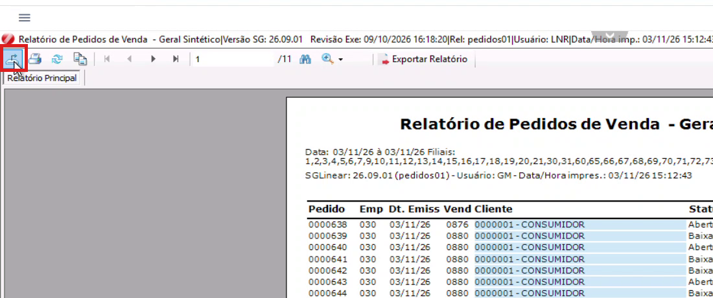
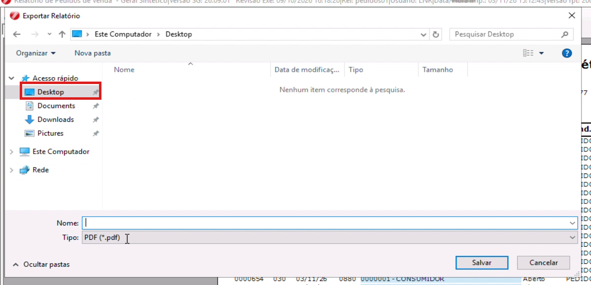
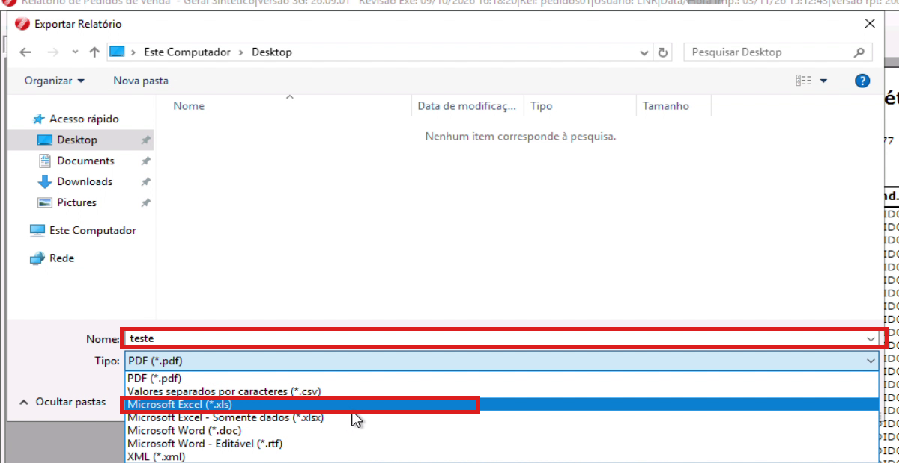
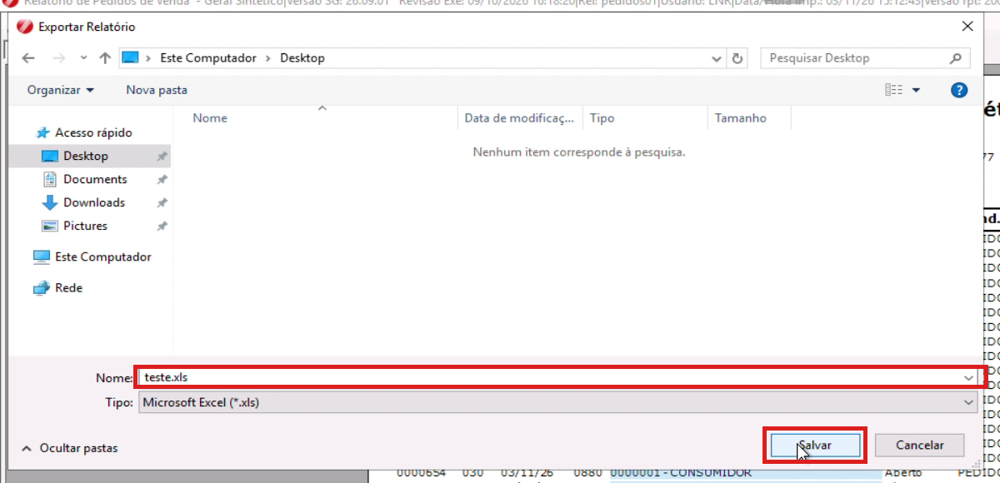
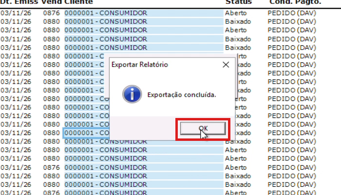
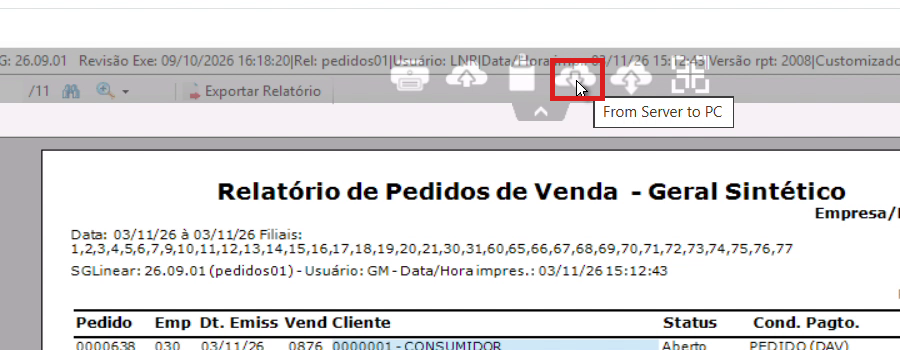
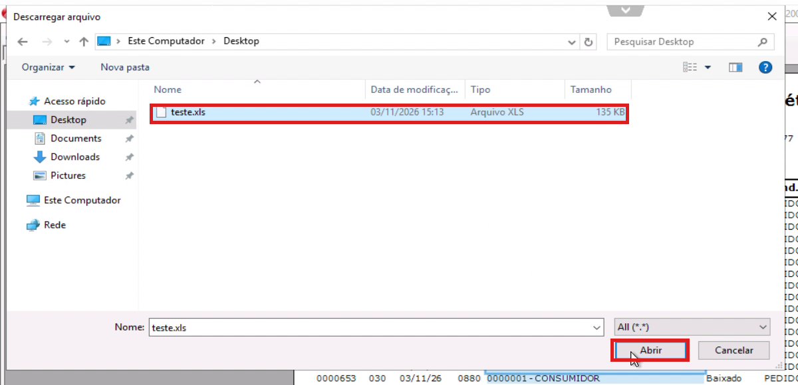
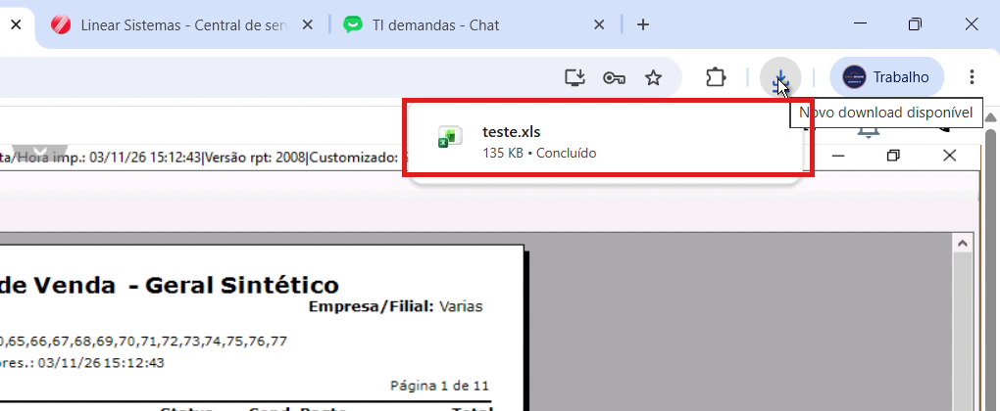
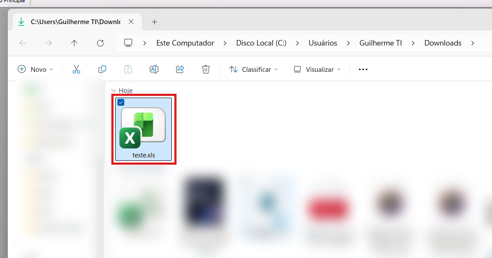

Como exportar relatório para Excel no Linear
Veja como salvar um relatório do Linear em Excel e trazer o arquivo para o seu computador.
Parte 1 - Exportar o relatório:
- Passo 1: Com o relatório aberto na tela, clique no primeiro ícone da barra, no canto superior esquerdo (ícone de exportar).
- Passo 2: Vai abrir a janela "Exportar Relatório". No lado esquerdo, clique em Desktop.
- Passo 3: Em Nome, digite o nome do arquivo. Em Tipo, abra a lista e escolha Microsoft Excel (*.xls) ou Microsoft Excel - Somente dados (*.xlsx). Os dois abrem no Excel.
- Passo 4: Confira se o Tipo ficou como Microsoft Excel e clique em "Salvar".
- Passo 5: Aguarde o processamento. Quando aparecer "Exportação concluída", clique em "OK".





Parte 2 - Baixar o arquivo para o computador:
- Passo 1: Passe o mouse no topo da tela do Linear, na setinha do meio, para abrir a barra de ícones. Clique na nuvem com a seta para baixo ("From Server to PC").
- Passo 2: Na janela "Descarregar arquivo", clique em Desktop, selecione o arquivo que você salvou e clique em "Abrir".
- Passo 3: Aguarde o "Please wait". O navegador vai mostrar o download concluído no canto superior direito.
- Passo 4: Abra a pasta Downloads do computador. O arquivo do Excel estará lá.




Nota: O arquivo é salvo primeiro no Linear (no servidor). Por isso a Parte 2 é obrigatória: sem ela o arquivo não chega no seu computador.